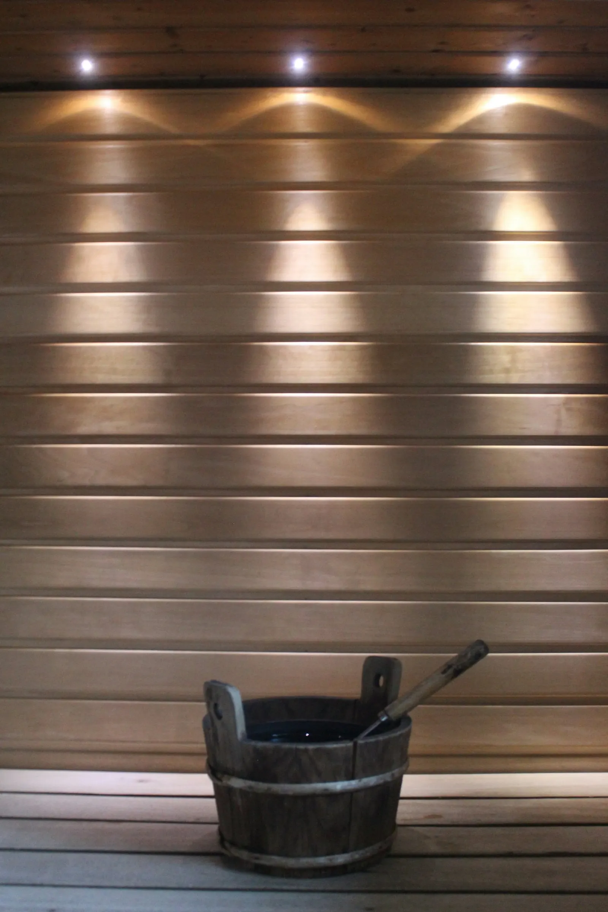
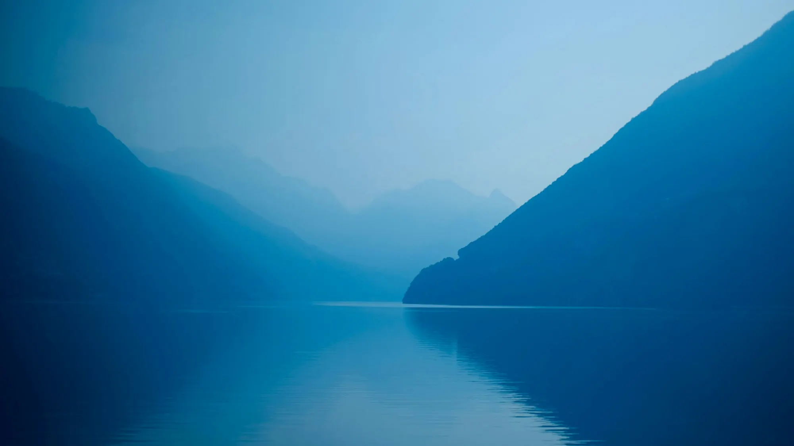
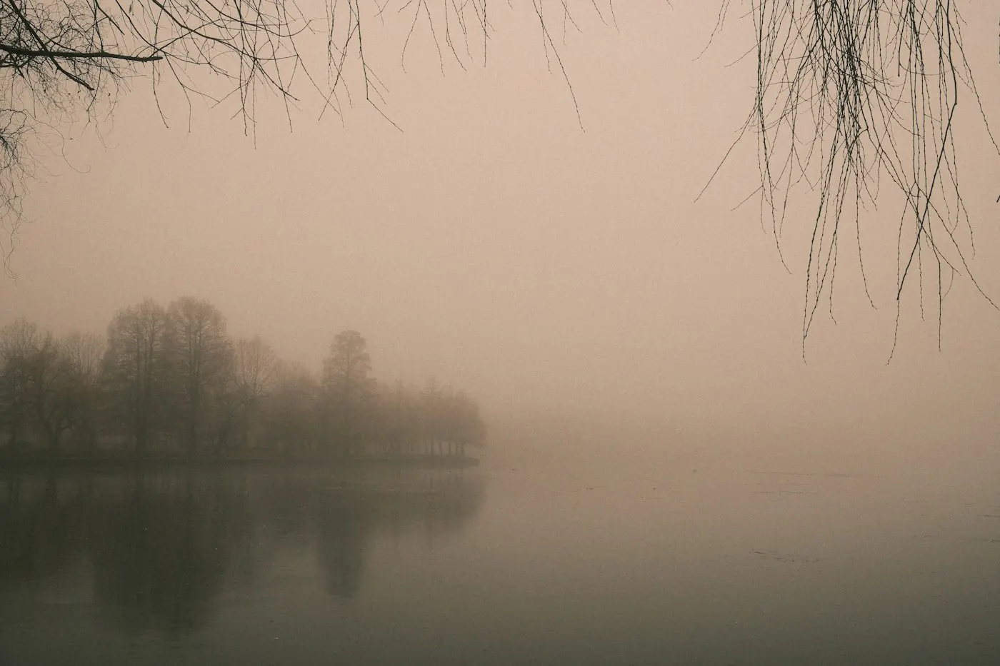
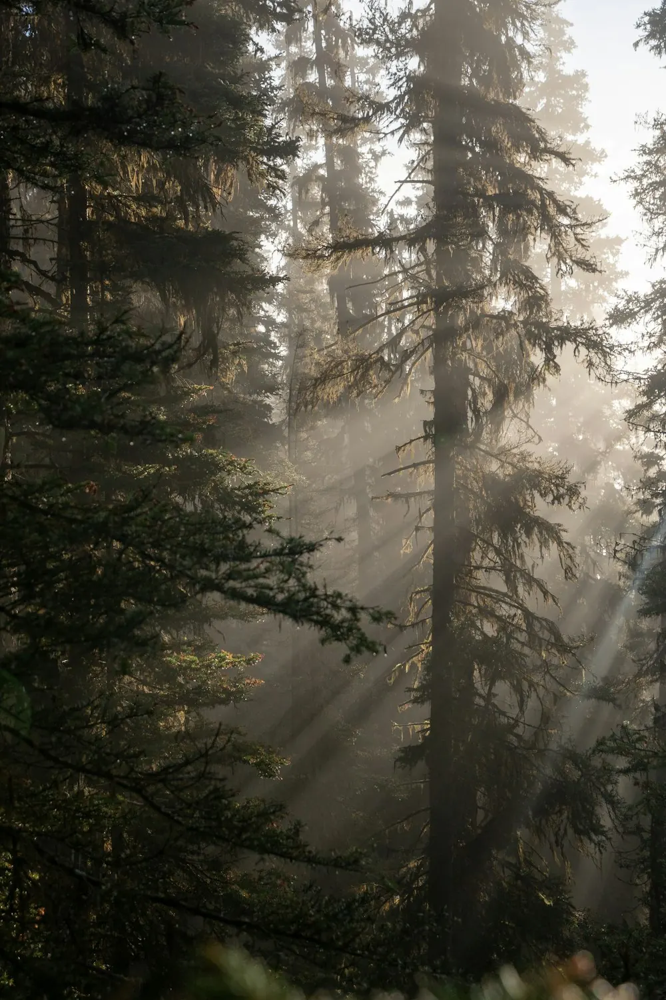
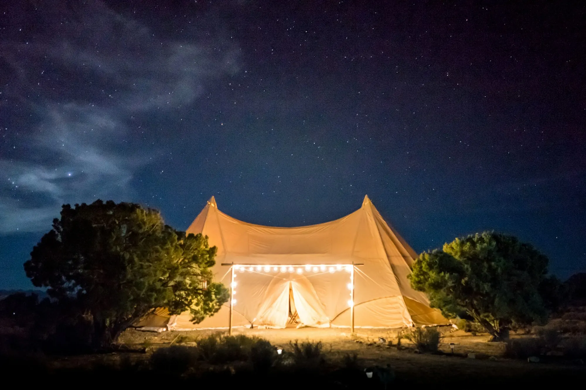
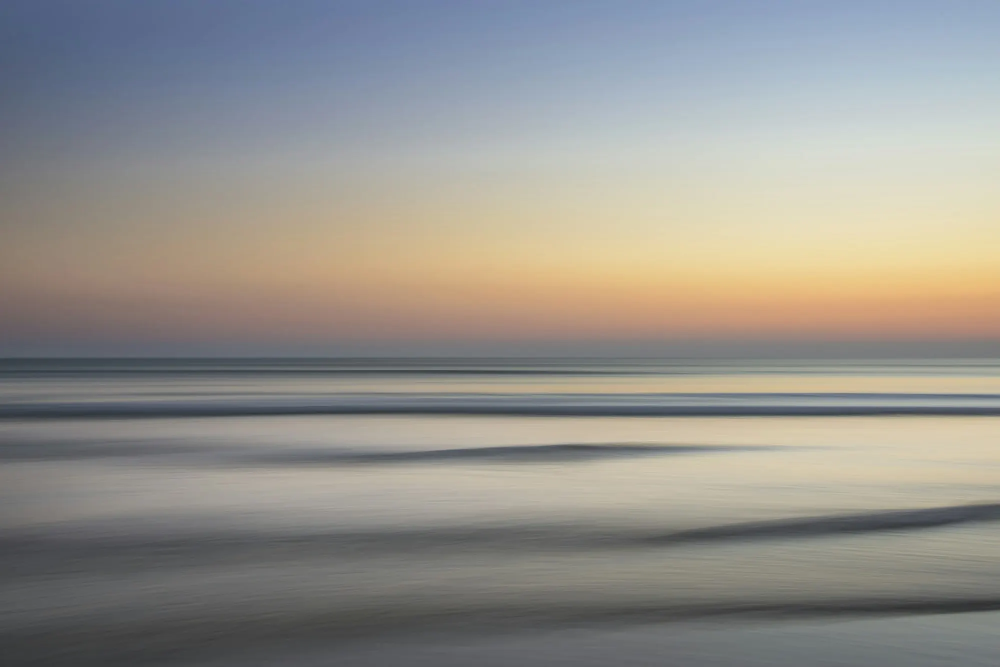

CONCEPT コンセプト
何もしない、を しに行く。
「凪」という名前
凪とは、風が止み、
海が鏡のように静まる、
ほんのひとときのこと。
毎日は、いつも少し風が強くて、
気づかないうちに
心に波が立っています。
何かを足すのではなく、
そっと引いていく。
森の音、水の気配、火のゆらぎ。
その中で、波はゆっくりと
静まっていきます。
-

-

PROMISE 3つの約束
どの宿でも、変わらずに守っていること。
-
01
自然
森、海、草原。
いちばん近くに自然がある
場所だけを選びました。 -
02
静けさ
テレビも時計も
置いていません。
聞こえるのは、風と水の音だけ。 -
03
上質
寝具やタオル、器。
手に触れるものは、
よいものを少しだけ。
STYLE 4つの過ごし方
サウナ、星空、焚き火、海。
NAGIで過ごす、4つの時間。


あなたの凪は、
どこにありますか。